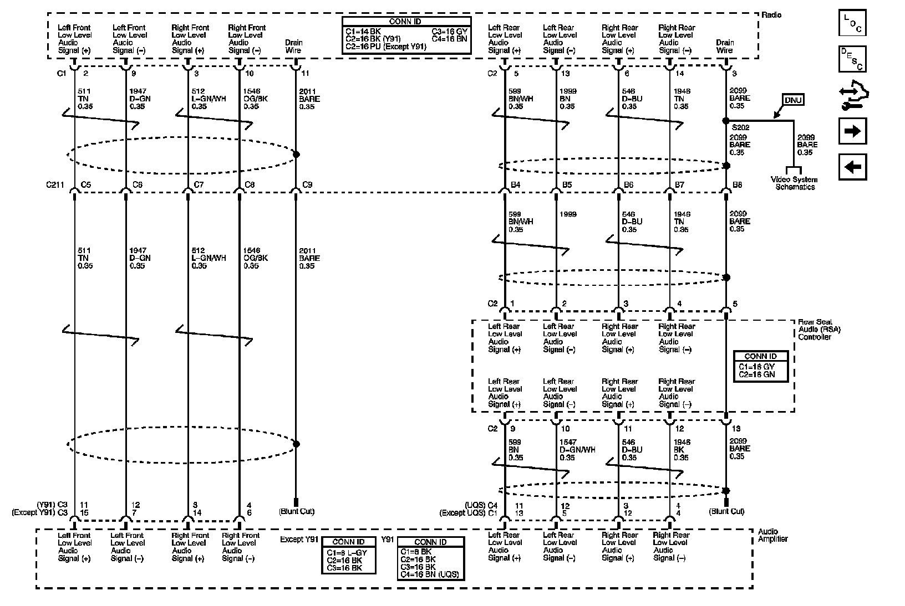

Radio/Navigation System Diagrams
Radio/Navigation System Schematics
Radio Power, Ground, Serial Data, and Antenna Signals
Amplifier (UQA/UQS) and Rear Seat Audio (UK6) Power, Ground, and Serial Data
Amplifier Audio Prompt, Center Channel and Subwoofer Circuits

Amplifier Inputs - UQA/UQS

Front Speakers - UQ3
Rear Speakers UQ3 Except UK6
Rear Speakers - UQ3 w/UK6
Front Speakers - UQA/UQS
Rear Speakers - UQA w/o Y91
Rear Speakers - UQS or UQA w/ Y91
Digital Radio Receiver - U2K